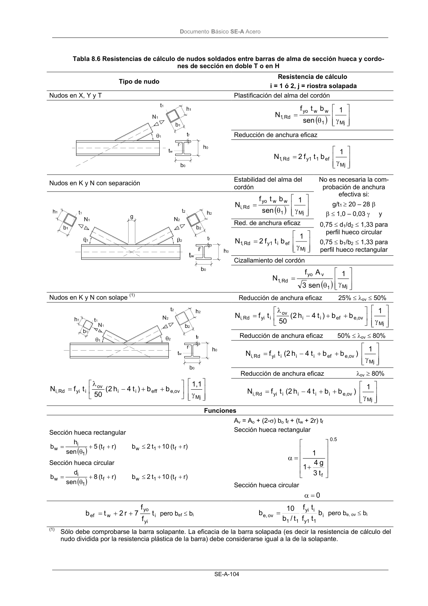

DB-SE-A · Fragmento de PDF p106 · versión 2007-10-23 · capa oficial
Formatos: JSON compacto · Markdown · PDF fuente
Ámbito del documento · texto del ámbito · documento y tablas
ID técnico a0145 · PDF pág. 106 · jerarquía no validada por persona · no es capítulo: sin_linea_de_encabezado · padre: raíz · literal original en el contenido: «( )»
( ) ) γ θ = Mj 1 w w yo Rd ,1 1 sen b t f N Reducción de anchura eficaz γ = Mj ef 1 y1 Rd ,1 1 b t f 2 N Nudos en K y N con separación Estabilidad del alma del cordón ( ) ) γ θ = Mj 1 w w yo Rd ,i 1 sen b t f N Red. de anchura eficaz γ = Mj ef i y1 Rd ,1 1 b t f 2 N No es necesaria la com- probación de anchura efectiva si: g/t1 ≥ 20 – 28 β β≤ 1,0 – 0,03 γ y 0,75 ≤ d1/d2≤ 1,33 para perfil hueco circular 0,75 ≤ b1/b2≤ 1,33 para perfil hueco rectangular Cizallamiento del cordón ( ) ) γ θ = Mj 1 v yo Rd ,1 1 sen 3 A f N Nudos en K y N con solape (1) Reducción de anchura eficaz 25% ≤λov≤ 50% γ + + − λ = Mj ov e, ef i i ov i yi Rd ,i 1 b b ) t 4 h 2 ( 50 t f N Reducción de anchura eficaz 50% ≤λov≤ 80% γ + + − = Mj ov e, ef i i i yi Rd ,i 1 ) b b t 4 h (2 t f N Reducción de anchura eficaz λov≥ 80% γ + + − λ = Mj ov e, eff i i ov i yi Rd ,i 1,1 b b ) t 4 h 2 ( 50 t f N γ + + − = Mj ov e, i i i i yi Rd ,i 1 ) b b t 4 h (2 t f N Funciones

PDF fuente redistribuible: copia fiel enlazada en esta página (SHA256 verificado).